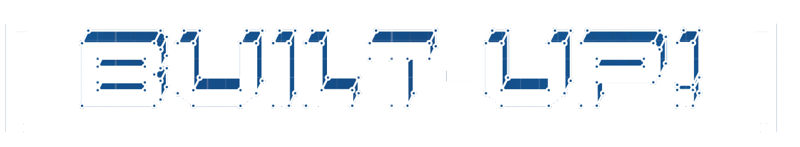

Unity SteamVR building game
Built-Up! is a VR building game about creative construction and coffee-cup relocation.
Using simple building blocks and connectors, players create innovative solutions to various problems to knock over coffee cups in various locations.
I assisted in creating this game as lead programmer and composer alongside six other developers as part of my Virtual Reality Design and Development II course at The University of Adelaide.
(Music from Built-Up! was used as the backing track of the showcase!)
Gameplay
Gameplay in Built-Up! involves knocking over coffee cups placed in increasingly complicated-to-reach positions. The way this is accomplished is with simple building blocks and physics-based connectors, from hinges to glue.
Building
I created a hologram spawner which is used in-game to create the building materials. Originally, the concept was that each player would have a pre-defined set of materials (from a specific “toolkit” chosen before the game started) that they would use to accomplish the goals. This feature was eventually scrapped due to two factors; it was hard to construct the sheer number of models required to have multiple sets of building materials, and also primarily it wasn't very fun to play with a restricted building palette.
The “Object Spawner” is a good solution; it provides a central consistent spawn location for objects that allows players to create as many building materials as they want.
Design
The game concept was originally to require a player to support a number of paper coffee cups from falling onto the ground via construction of a coffee table. This was eventually changed to knocking existing cups over because Unity's inbuilt physics doesn't really play nice with having weight constraints and forces.
Given the two scenes I had to work with, I had to come up with interesting missions for each. I ended up creating 9 missions in total; 4 for the “Living Room” scene and 5 for the “Courtyard” scene. Each has a unique concept which challenges the player in different ways. Admittedly, the earlier ones are rather easy; I created them just so the players can get a good feel for the game.
Soundtrack
The game is quite light-hearted with a simple cartoonish art-style, so I tried to encapsulate that feeling into the music; the style is relatively upbeat and jovial. Tracks such as "City Life" or "If you Build It.." share this style in a way that I feel fits the aim of the game quite well. For an ingame change of pace I created the more-subdued "Articulate", which still fits the building theme but as it's less intense it gives the player room to think and experiment.
The tutorial section of Built-Up! ended up getting scrapped, but I had created music for it anyway; "Learn the Ropes" I feel works as a tutorial theme as it's exciting yet mysterious.